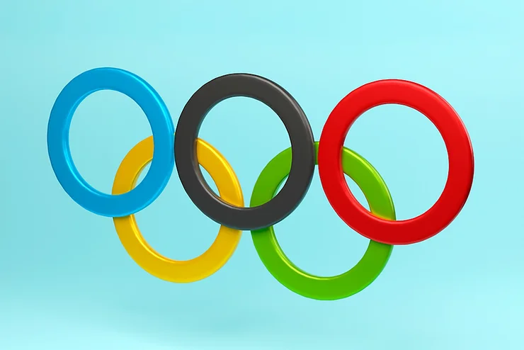
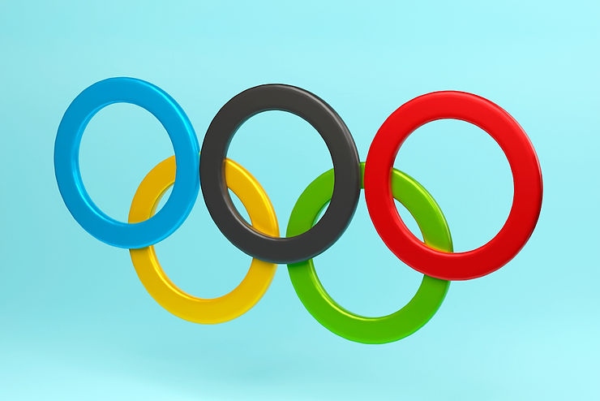

O Dia Mundial do Desporto Olímpico é celebrado anualmente em 23 de junho. É uma homenagem à criação do Comitê Olímpico Internacional, fundado em 23 de junho de 1894. Iniciativa do francês Pierry de Frédy (conhecido como Barão de Coubertin), o Comitê Olímpico nasceu com o objetivo de resgatar o espírito de competição dos antigos Jogos Olímpicos que eram realizados na Grécia antiga.
Na mesma data é celebrado, anualmente, o Dia do Atleta Olímpico homenageando a todos os atletas que se dedicam, com muito treino, a participar dos esportes olímpicos com empenho, esforço físico e psicológico, além de muita disciplina focada no sucesso desses atletas.
Os primeiros Jogos Olímpicos Modernos foram realizados na cidade de Atenas, na Grécia, entre os dias 6 e 15 de abril de 1896. Atualmente, os Jogos Olímpicos são feitos de 4 em 4 anos e em diferentes países do mundo.
Durante o Dia Olímpico, como é chamado, são organizadas diversas atividades que buscam lembrar a comunidade em geral sobre os princípios de “exercitar, aprender e descobrir”.
Para falar mais sobre o tema fomos conversar com duas psicólogas do esporte, associadas da ABRAPESP, e pedimos que respondessem duas perguntas que nos mostrasse a visão e vivência de cada.
ABRAPESP- Há alguma especificidade a ser dada atenção quando se trabalha com atletas olímpicos?
DANIELE MUNIZ
Atletas olímpicos são atletas de altíssimo rendimento. O preparo global e o tipo de treinamento a que este grupo seleto está submetido, visa a superação dos limites físicos e emocionais. Entendo que o nosso trabalho deve seguir com o mesmo padrão de excelência, mas não enquanto performance ou recurso para alcançar resultados apenas. Com essa afirmativa me refiro ao padrão ético que devemos assumir no exercício da Psicologia neste campo. É preciso garantir que o rigor científico das nossas intervenções esteja alinhado com o compromisso social que orienta nossa profissão. Bom, de um ponto de vista mais pragmático, diria que atletas olímpicos precisam de muitos cuidados. Dentre eles, destacaria como pontos sensíveis de atenção o manejo da pressão por resultados, o assédio da imprensa e torcida, relação com redes sociais, tolerância à frustração e à autorregulação emocional.
MARINA GUSSON
De forma geral quando falamos de trabalho com o atleta olímpico, penso eu, de forma bem resumida e objetiva, que o diferencial e a especificidade seja justamente a consciência que estamos trabalhando com o altíssimo rendimento, ou seja, atletas profissionais que já tem uma longa carreira, ou uma carreira muito bem sucedida na sua modalidade pra terem conseguido vaga inclusive para estarem participando dos Jogos Olímpicos. Estar lá tem uma questão simbólica fortíssima, porque é o campeonato que agrega as diversas modalidades e os melhores do mundo. A questão da simbologia precisa de cuidado, porque se pensa: “Meu Deus, estou no maior campeonato do mundo”. E isso pode gerar ansiedade, cobranças, assim como deslumbres, porque é um ambiente onde você olha para o lado e todas as pessoas são famosas, você conhece e você está no meio de pessoas de grande destaque e isso mexe com a consciência do atleta “que bacana eu faço parte disso tudo”.
Mas dependendo da personalidade, do histórico de vida, pode ser um gatilho para uma série de ansiedades. Ter consciência da especificidade, seja ela simbólica, ou cultural, e o que isso significa em termos Dos objetivos do atleta para conseguir preparar de uma forma realista para essa situação.
ABRAPESP – E o que diferencia trabalhar nos Jogos Olímpicos das demais competições?
MARINA GUSSON
Em relação ao trabalho no local e durante os jogos, vejo uma enorme diferença. Porque, estar dentro de uma vila Olímpica é algo que por si só já é um fenômeno. Você tem grandes distrações como: restaurante gigante que pode comer o que quiser, quantas vezes quiser, na hora que você quiser, com refrigerante, doce… você tem videogame, academia …os lugares de patrocinadores, de imprensa… Tudo borbulhando fortemente, mas onde você precisa que o atleta esteja super focado. E temos que entender que ciclo olímpico é um ciclo longo, está no ápice do rendimento dele, e dependendo do planejamento que foi feito, aquilo tudo pode até cansá-lo demais, ele se poupa para chegar na competição com a energia. É um exercício de foco gigantesco, seja para a comissão, seja para o próprio atleta. Então poder trabalhar isso previamente, para que o atleta esteja preparado para a hora que surgir as tentações, para que faça escolhas coerentes com o seu objetivo é fundamental.
Preparar o atleta para os jogos, entra uma série de coisas, como por exemplo a mídia. Como ele vai lidar com a mídia, porque ele compete, ele precisa passar na zona mista, que é um caminho que, obrigatoriamente, tem que fazer e vai passar onde estão todos os jornalistas e provavelmente será entrevistado, então é logo quando ele termina de competir ou de jogar. As vezes ele treinou por 4 , 8 , 12, 15 anos da vida dele, 16 anos pra estar lá e não faz o resultado que ele quer, isso faz com que emerja um vulcão de emoções e já precisa passar numa zona mista. Então como você vai ajudar esse atleta a lidar, gerenciar isso tudo dentro dele, fazer o papel que ele tem que fazer e que os patrocinadores esperam que ela faça em uma zona mista para não se prejudicar, sendo que tudo isso tá relativo ao resultado que ele teve.
Precisa preparar o atleta para as responsabilidades que existem dentro de uma vila olímpica, que vai desde colocar sua roupa no saquinho pra lavar, ir pegar essa roupa na hora que ela está pronta, pegar o ônibus correto pra ir até o local de treino e de competição, bem como aproveitar o momento que é único, mas ao mesmo tempo ter a responsabilidade porque vai competir.
DANIELE MUNIZ
O caráter simbólico de uma edição de Jogos Olímpicos já é uma coisa grandiosa. Trabalhar num evento deste porte é ter a absoluta certeza de que fará parte do maior evento esportivo do planeta. É uma competição que reúne os maiores atletas de todo o mundo em diferentes modalidades. É a celebração máxima do esporte. Sem sombra de dúvidas, o aspecto motivacional tem muito valor. Digo isso a partir do ponto de vista de uma profissional de psicologia, que por mais que procure manter uma postura profissional, também pode se perder com tamanho encantamento. Sim, é verdade. Também precisamos de preparo para encarar uma edição de Jogos Olímpicos. São muitos os estímulos e distratores que podem levar a deslizes e deslumbramentos. A experiência conta muito também para nós. Gosto de ressaltar este ponto. A festa é linda demais, precisamos equilibrar o entusiasmo, natural devido a natureza do evento, com a serenidade necessária para a realização do nosso trabalho com ética e profissionalismo. Para muitos dos nossos clientes participar de uma edição das Olimpíadas é a realização máxima da carreira. Tem muita coisa em jogo. Precisamos levar tudo muito a sério.